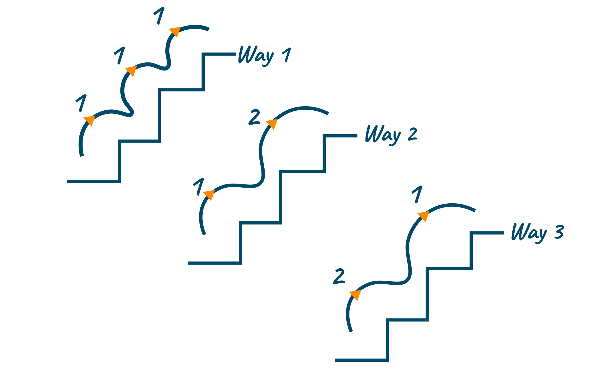

After identifying the types of roles and companies that I will be targeting first, I began reaching out to my network to see if anyone had any connections at these companies. I also began to reach out to recruiters to see if they had any roles that matched my criteria.
Although most job boards seem to have a lot of the same postings, I am using a few different ones to try to find the best opportunities. I am also using LinkedIn to find roles that are not posted on job boards.
I'm also working my way through the Blind 75 on neetcode in order to prepare for technical interviews, and have a few personal projects in mind that I would like to work on.
One of the problems that I remembered from several years ago, that isn't particularly complex, is the stair climber problem. For some reason, I find this one especially fascinating and a good use case for computers in general. It is the kind of problem that makes me wish I were a mathemetician and could solve it on paper.
The crux of the problem is this: Suppose you are at the foot of a staircase, and you can climb the staircase by either taking one step, or two steps at a time, eventually reaching the top step on the last step. How many different ways can you climb the staircase?
The solution is ironically not to look from the bottom up, but instead to look from the top stair down and count backwards recursively until you hit the base case. The base case is when you are at the first or second step, and there is only one way to get there. From there, you can either take one step or two steps, and the number of ways to get to the top is the sum of the number of ways to get to the top from the previous step and the step before that.
This is a classic example of a problem that can be solved with dynamic programming, and is a good example of how to break a problem down into smaller subproblems and solve them in order to solve the larger problem.
Because the top step can only be reached by either the top-1 or top-2nd steps, the number of ways to reach the top step must be the sum of the ways to reach those steps, or steps(top-1) + steps(top-2).
But what if we are on the 2nd or 1st to last step? These are our base cases in which case our recursive function will return. For the first step we return 1. There is only one way to reach the first step. For the second step, we return 2. There are two ways to reach the second step, either by taking two steps from the base step, or by taking one step twice, once from the base and once from the first step.
So now our function looks like this:
function steps(n) {
if (n === 1) return 1
if (n === 2) return 2
return steps(n-1) + steps(n-2)
}
It is tempting to stop here and congratulate ourselves! But as is often the case with recursion, we should notice something. There are two recursive calls in this function, and they are not memoized. This means that we are recalculating the same values over and over again, which is not efficient. We can fix this by memoizing the results of our recursive calls:
const seen = {0:0}
function climbStairs(n) {
if (n === 1) {
return 1
} else if (n === 2) {
return 2
}
seen[n-1] = seen[n-1] || climbStairs(n-1)
seen[n-2] = seen[n-2] || climbStairs(n-2)
return seen[n-1] + seen[n-2]
}
By storing computed values for later access in a map, we cut down the number of recursive calculations made exponentially, and can now calculate the number of ways to climb a staircase with n steps in O(n) time and O(n) space.
For a staircase with 20 steps, by taking 1 or 2 steps each time, there are 10,946 different ways you can climb the stairs!